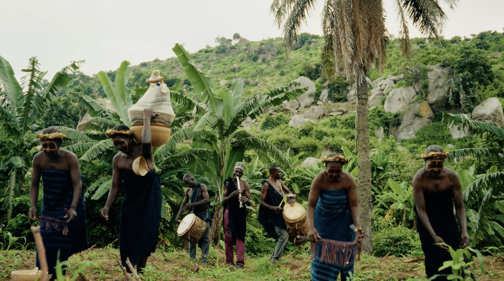
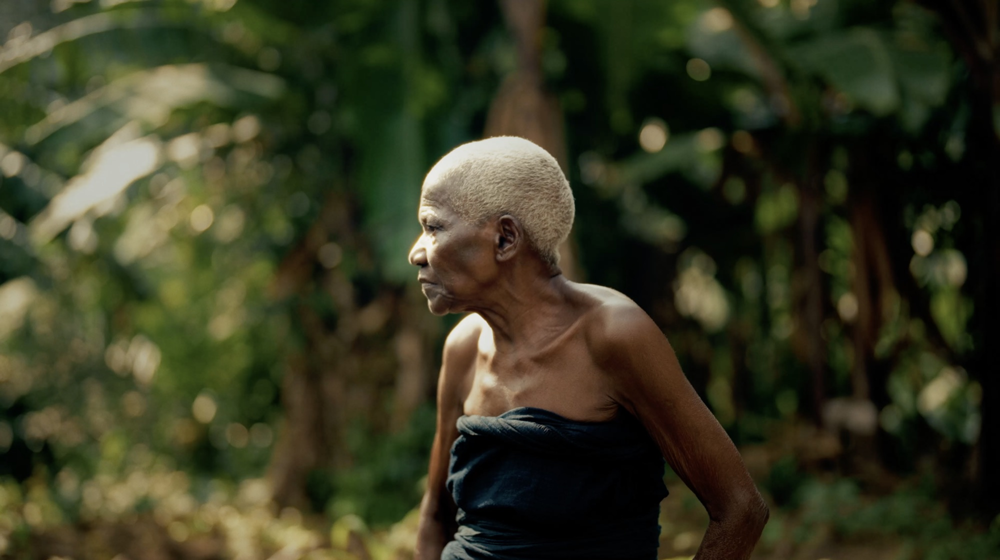
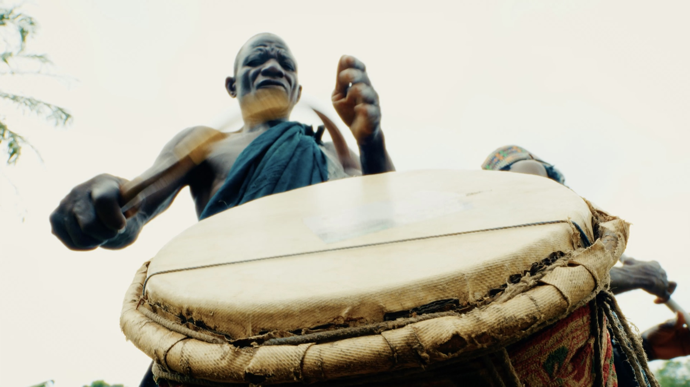
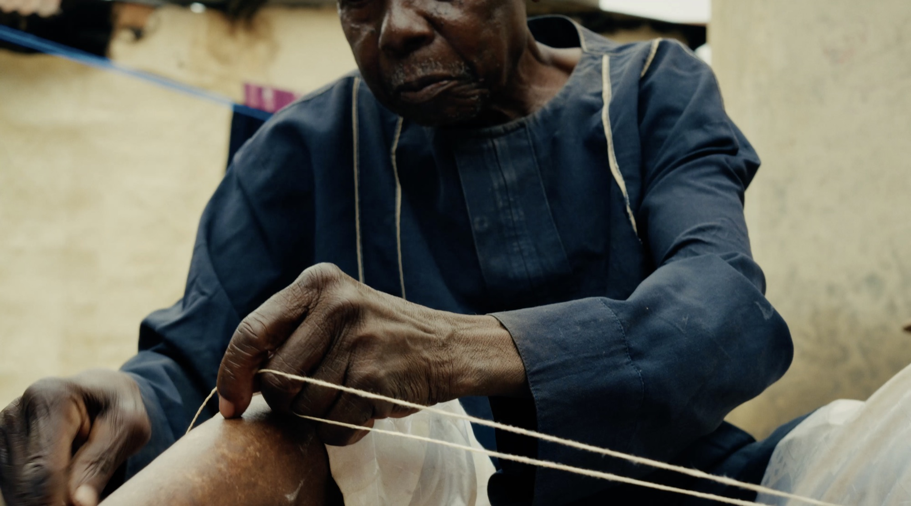
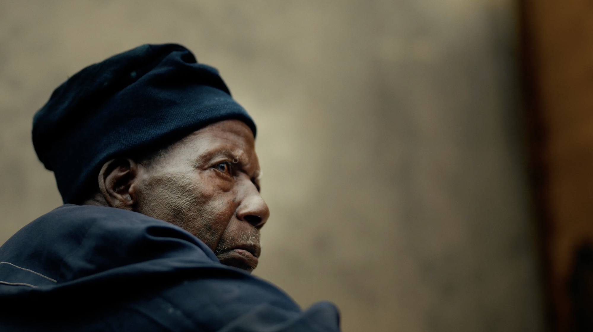
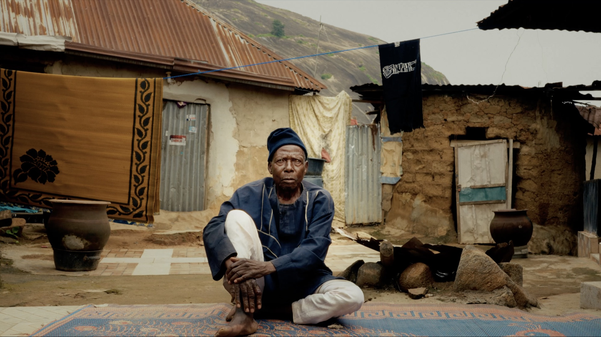
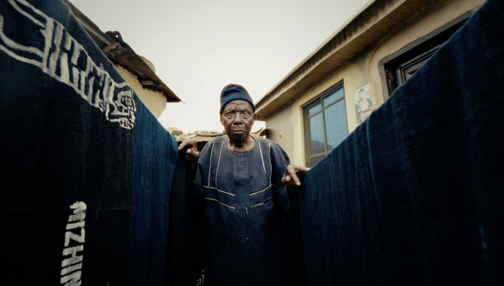

DOCUMENTARY · SHORT FILM · WINNER, THREADS OF AFRICA 2026
Ajeside
The endangered handwoven cloth of the Gbagyi people, and what we stand to lose when a craft goes quiet.
- ROLE
- Director of Photography
- SUBJECT
- Gbagyi textile heritage
- LOCATION
- Federal Capital Territory, Nigeria
- STUDIO
- Kolimo Multimedia
- AWARD
- Winner, Stories of Rebirth · Threads of Africa 2026 · $25,000 grant
SYNOPSIS
Ajeside is a short documentary exploring the endangered handwoven textile tradition of the Gbagyi people, one of the indigenous communities of Nigeria's Federal Capital Territory. More than a fabric, Ajeside represents identity, heritage, and generations of craftsmanship passed down through skilled weavers.
Through the stories of a master weaver, his son, and a community elder, the film examines the cultural importance of Ajeside and the growing risk of its disappearance as fewer young people learn the craft. Combining intimate interviews with immersive visuals of the weaving process, the documentary celebrates the skill, patience, and traditions woven into every piece.
At its core, Ajeside is a story of culture, memory, and resilience, asking what we stand to lose when traditional crafts fade, and what we can preserve when we choose to protect them.
WATCH

PUBLISHED BY ELEVATE AFRICA · WATCH ON YOUTUBE
STILLS





